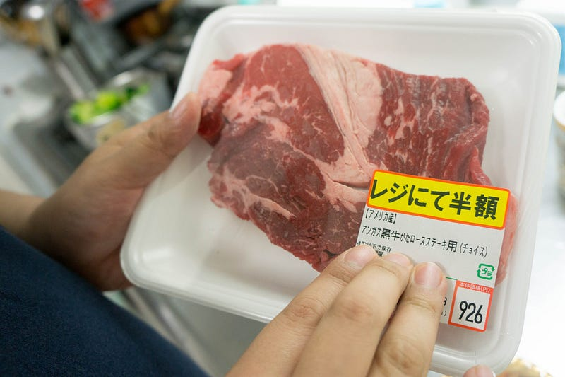
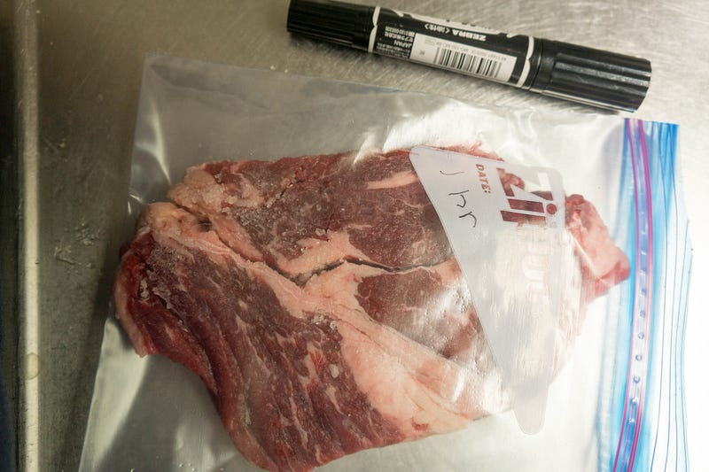
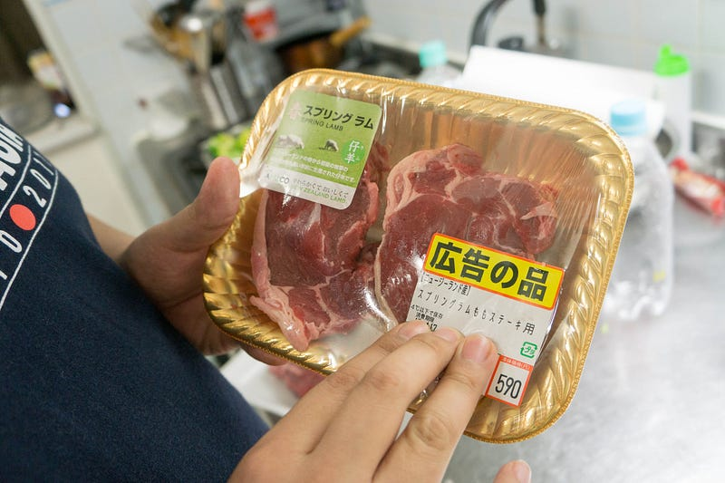
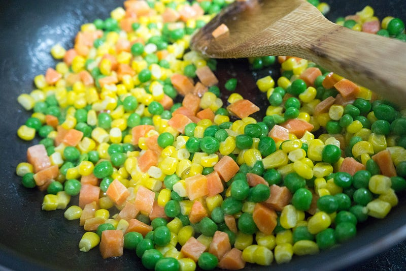
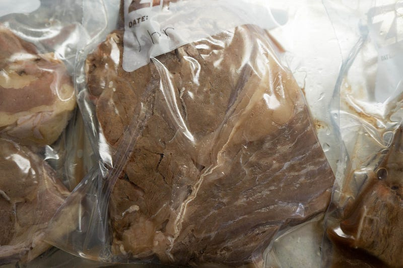
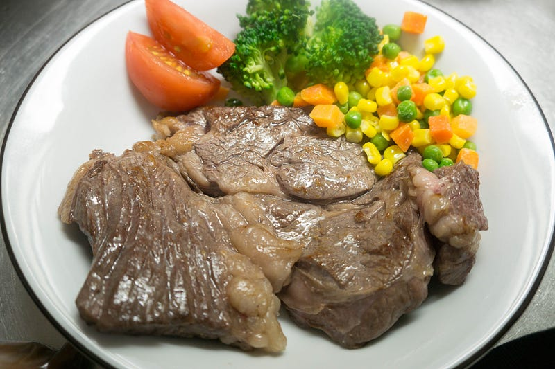
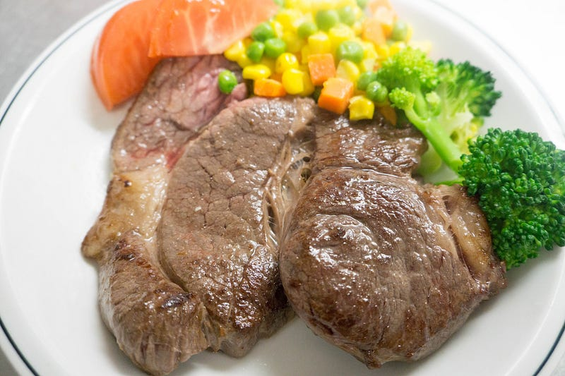
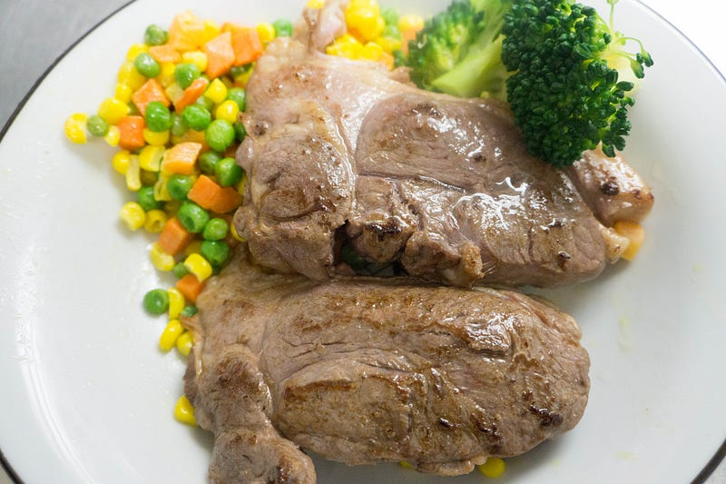

anovaでステーキを加熱条件を加えて調理してみる
anovaでステーキを加熱条件を加えて調理してみる
わりとanovaで作ってみたかった物は一巡した感じがする。ここで今度はいくつか設定条件を変えつつ調理がどうなるか研究してみたい。ということで今日は半額ステーキです。

anova
※ WiFi タイプになります。900W スマホと連動してお鍋の水温をコントロール。どこからでも調理 ポンプ速度：毎分7〜8リットル、360度回転のポンプ アプリで操作可能 設定温度に達したらスマホにお知らせ アプリはAppストアUSな…amzn.to
前回はこちら
今回試すのはレジで半額、という形で売っていた牛肩ロースステーキ。決して「すごく柔らかい！」という部位でもないが「まぁまぁいけるだろ」ってヤツです。筋もそれなりにあります。半額なのと、スーパーにしては厚さがあるので許せます。
設定は55℃で1時間、と2時間。

1時間のヤツは（左手で）「1hr」と書いておいた。

諸事情により、なんと牛肉2枚、ラム肉2枚の攻撃的な布陣です。こちらも55℃で1時間やっていきます。
anovaはいつも通り。肉に塩を振って、キッチンペーパーでつつんで20分くらい放置。お湯はいつものバケツにはって、55℃にしてから調理開始。
その間にいつもステーキをやってると出てくる彩り野菜を作る。これ、冷凍野菜を軽く少量のオリーブオイルで炒めて、塩してから、マヨネーズで味を調えるだけ。昨今のコレ系の冷凍野菜はむかしを知ってる身からすると異常に甘いので、ステーキの添え物なら味付けは薄くてOK。かといって茹でただけだとなんか悲しいじゃん？ってことで軽く味を調えるわけですが、その場合にマヨネーズはわりと良い。塩味をあまり足さずにコクを足してくれる。

さて、できあがった肉。毎回毎回anovaからあげると肉が本当に美味しくなさそうなので、ついつい面白くて写真をあげてしまう。

火にかけるとキレイになるんだけどねー。
ということでもの熱々の油で仕上げしてできあがり。

1時間もの。

2時間もの。

ラム。
というわけで結果
牛肉：1時間ものvs 2時間もの これは2時間もののほうが柔らかく、うまかった。全く同じ肉というわけでもないだろうし、個体によって差はあるだろうけど、やはり加熱時間自体に意味は確実にあることがわかった。この部位はわりと筋も多いので、anovaで下ごしらえする意味は結構ある。
ラム肉 悪いけど、これが一番うまかったｗ これからどういう教訓が得られるかというと、スーパーで半額で売っている肉はやはりそれなり、ということだ。ラム肉は少なくても現時点ではコストパフォーマンスが異常に高い。非常に柔らかく、ジューシーにできあがった。子供も一番この肉を食べた。
というわけで、スーパーの肉でやる分には牛肉にこだわらず、ラム肉とかのほうが狙い目な気がする。牛肉に関しては 今度BBQを画策しているので、それまでに「高い、絶対美味い肉をanovaで下ごしらえしたらどうなるのか」を調べて、その結果をBBQにフィードバックしたいと思う。